Pictures only, nothing in the game has changed yet. Each row shows today's cream page, then two dark options. Swipe sideways in each row. Cards, envelopes, and the How to play sheet stay paper, like files on a dark desk; only the page around them goes dark.
A · Night Desk has a cool blue lamp glow at the top, the same desk as Intercept. B · Darkroom has a warm red glow in the middle, the same as the share picture.
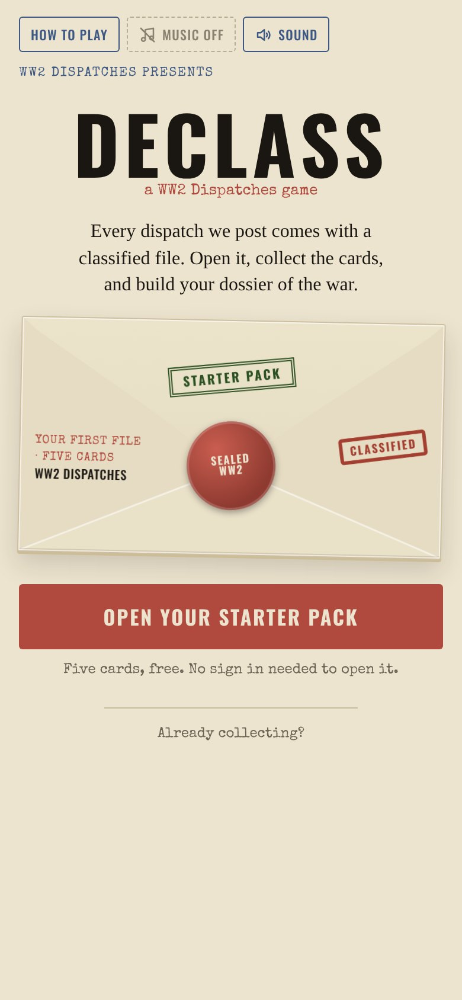
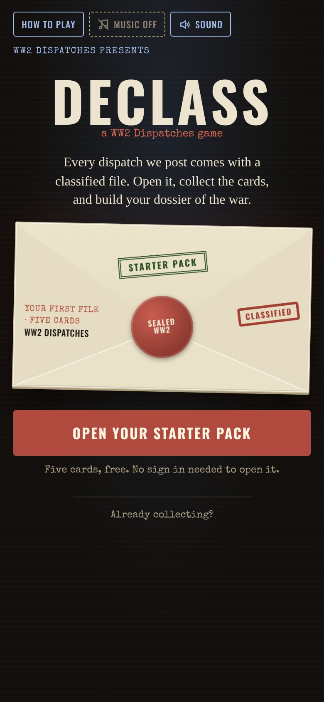
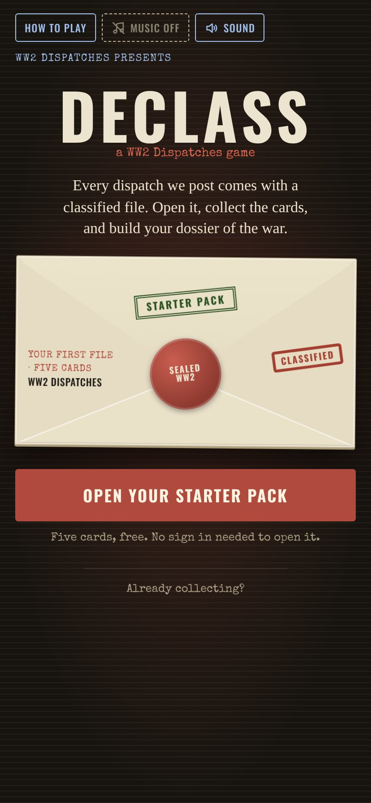
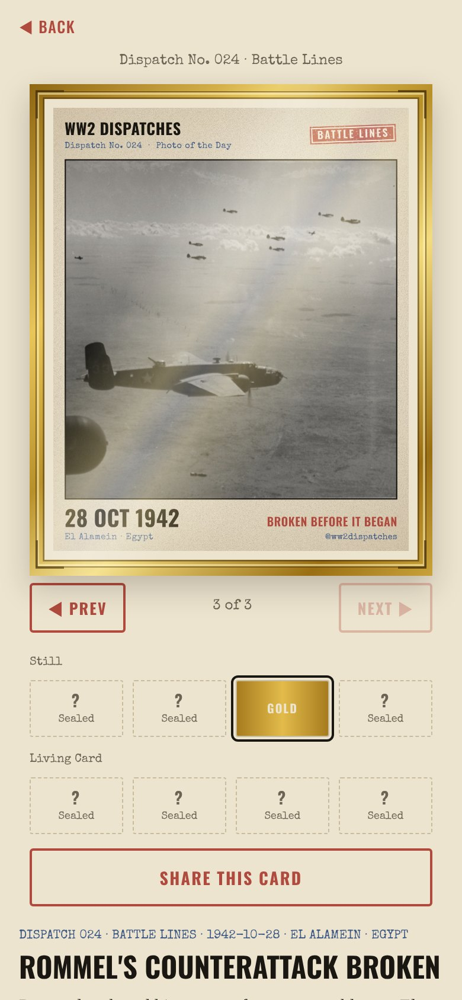
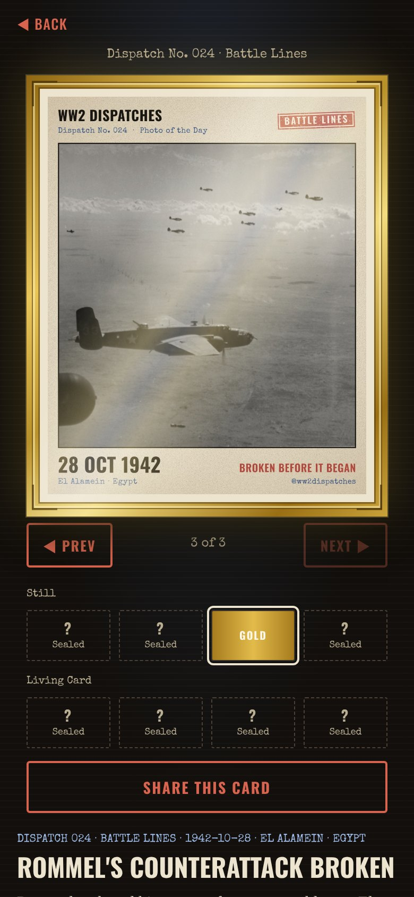
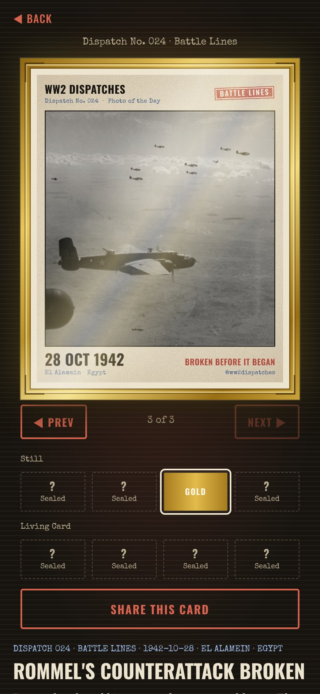
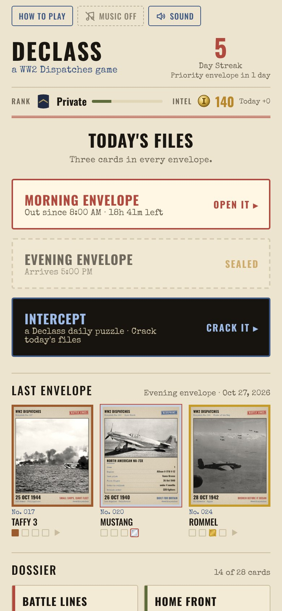
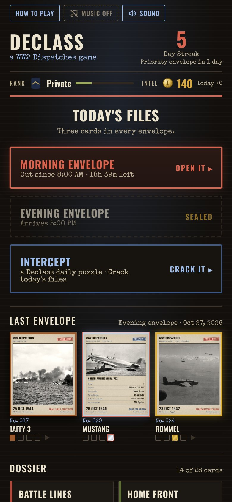
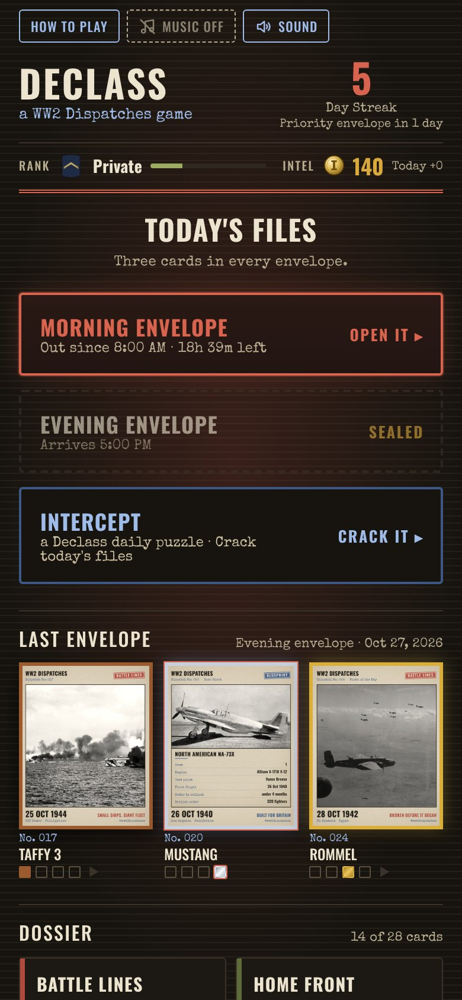
The same pictures in one sheet each, for a computer screen.
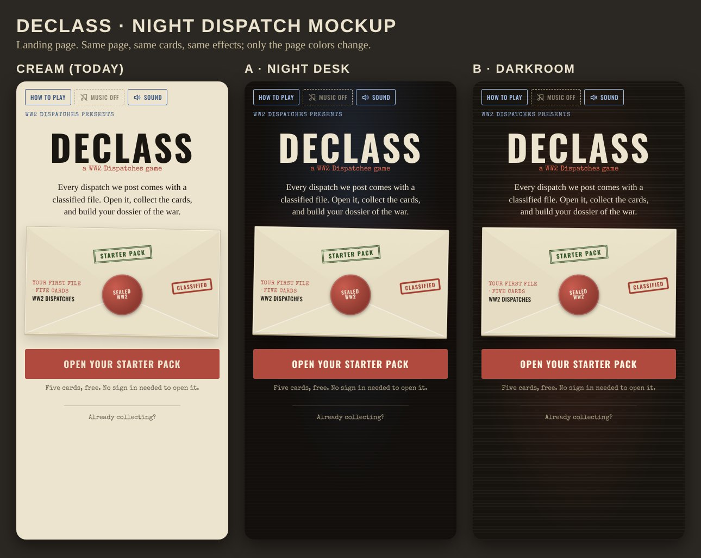
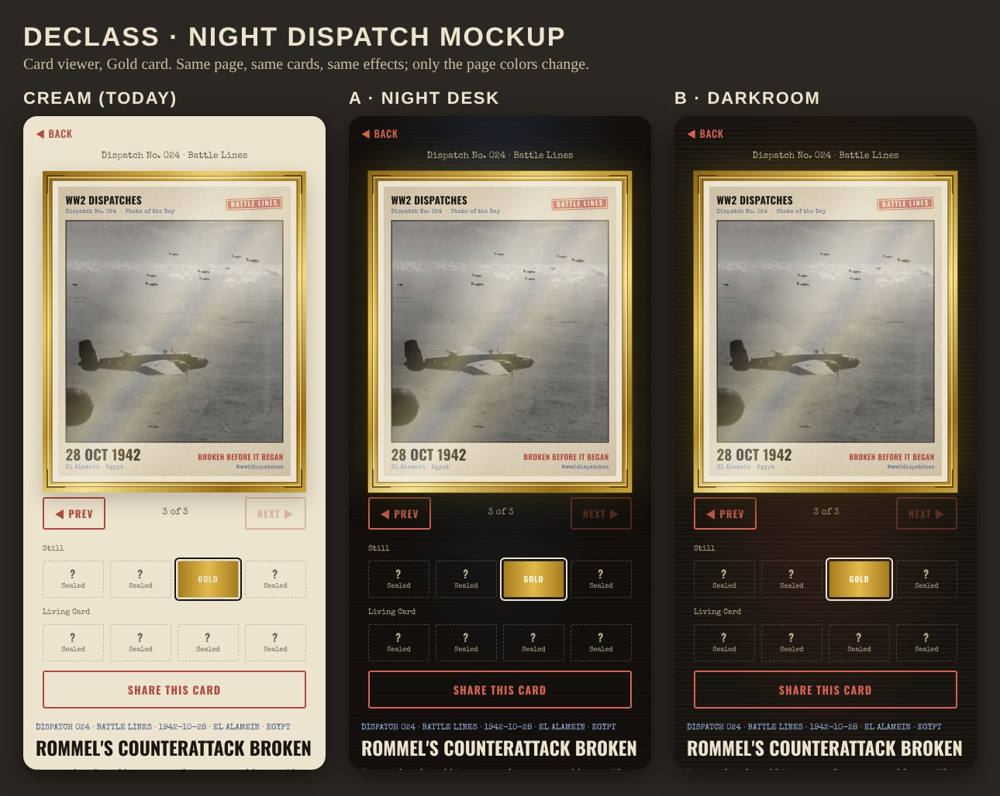
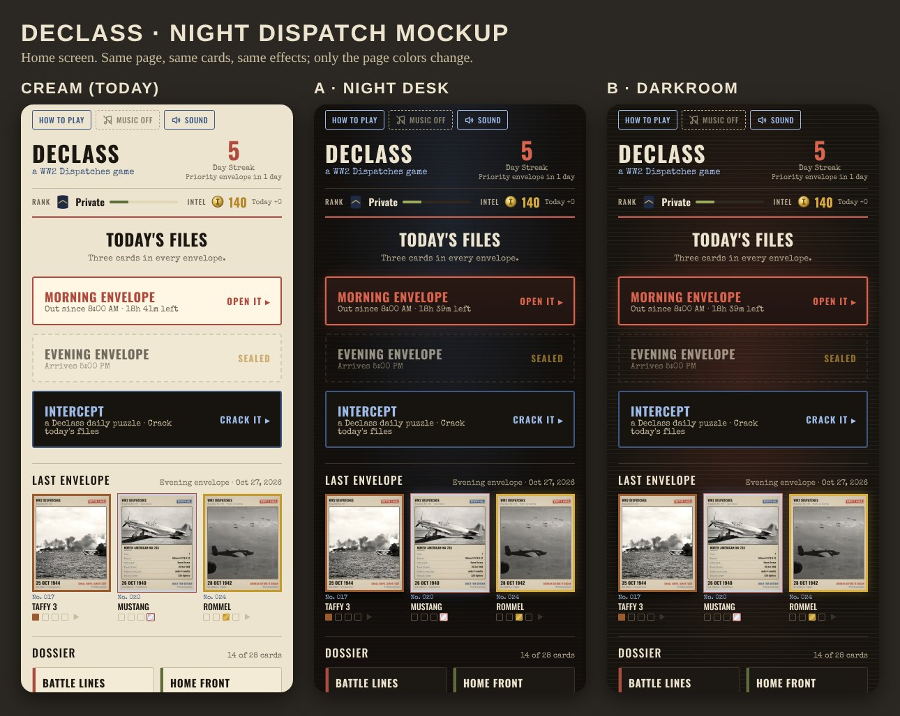